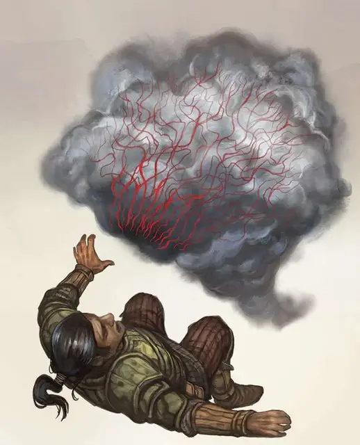

Вампирический туман
Vampiric Mist
Средняя Нежить, хаотично-злая

Класс Доспеха 13
Хиты 30 (4к8 + 12)
Скорость 0 футов, летая 30 футов
| мод | спас | ||
|---|---|---|---|
| СИЛ | 6 | −2 | −2 |
| ЛОВ | 16 | +3 | +3 |
| ТЕЛ | 16 | +3 | +3 |
| мод | спас | ||
|---|---|---|---|
| ИНТ | 6 | −2 | −2 |
| МДР | 12 | +1 | +3 |
| ХАР | 7 | −2 | −2 |
Сопротивление урону звук, кислота, некротическая энергия, холод, электричество; дробящий, колющий, рубящий
Иммунитет к урону яд
Иммунитет к состояниям окаменение, опутанность, отравление, сбивание с ног, захват, паралич, очарование, истощение
Чувства тёмное зрение 60 футов, пассивное Восприятие 11
Опасность 3 (700 опыта)
Бонус мастерства +2
Среда обитания Арктика, Болото, Город, Горы, Лес, Луг, Побережье, Подземье
Особенности
Чувство жизни. Вампирический туман может почувствовать любое существо в радиусе 60 футов от себя, если только это не нежить или конструкт.
Запрет. Туман не может войти в жильё без приглашения одного из его обитателей.
Туманная форма. Туман может занимать чужое пространство и наоборот. Кроме того, если воздух может проходить сквозь пространство, то и туман может проходить сквозь него без протискивания. Каждый фут передвижения в воде стоит 2 дополнительные фута, а не 1 дополнительный фут. Туман не может взаимодействовать с объектами, требующими наличия пальцев или ловкости рук.
Гиперчувствительность к солнечному свету. Туман получает 10 урона излучением каждый раз, когда начинает ход под солнечным светом. Находясь на солнечном свету, он совершает с помехой броски атаки и проверки характеристик.
Действия
Вытягивание жизни. Туман касается одного существа в своём пространстве. Цель должна преуспеть в спасброске Телосложения Сл 13 (нежить и конструкты автоматически преуспевают в спасброске), иначе получит 10 (2к6 + 3) урона некротической энергией; туман восстанавливает 10 хитов в то время, как максимальное значение хитов цели понижается на значение полученного урона некротической энергией. Понижение хитов длится до завершения целью продолжительного отдыха. Цель умирает, если максимальное значение её хитов снизится до 0.
Описание
Во мгле обитает вампирический туман, жалкие остатки вампиров, что не смогли найти покоя. Будучи неразличимыми в туманной местности, в которой они обитают, они нападают скрытно и незаметно, высасывая кровь жертву досуха.
Бывшие вампиры. Вампирический туман, иногда называемый багровым туманом, всё, что осталось от вампиров, которые не смогли вернутся в свои захоронения после того, как были побеждены или пострадали в несчастном случае. Лишённые восстановительных сил из этих мест, тела вампиров растворяются в туман. Трансформация отдирает интеллект и личность от тела, пока не останется только нечестивая, ненасытная жажда крови.
Кровосос. Неотличимый от мглы, кроме исходящего из него сильнейшего мерзкого запаха, вампирический туман окутывает существо и высасывает его сочную кровь через ткани кожи, либо через глазные и носовые отверстия, и ротовую полость. Кровь, что высасывается из жертвы, принимает вид лёгкого дыма алого цвета, который поглощается туманом. Высасывание крови не причиняет боли или диском- форта жертве, поэтому вампирические туманы могут питаться спящими, даже не разбудив их. Чем больше туман питается, тем более краснее он становится, начиная с розового, затем красного, и заканчивая густым багряным оттенком, после которого, из этой сущности, во время перемещения, проливаются капли крови.
Влечение к крови. Подобно акуле в воде, вампирический туман может учуять кровь на расстоянии до мили. Любая травма, какой бы маленькой она не была, может прилечь внимание и притянуть туман к жертве. В битве, туман фокусирует атаки на раненых существах, поскольку открытые раны являются готовыми источниками крови.
Природа нежити. Вампирический туман не нуждается в воздухе или сне.